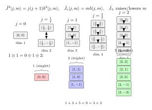

群表示 — 物理量在对称变换下怎么变?
把一杯水放在桌上, 旋转 30°. 水温没有变 — 因为温度是一个数, 没有方向. 杯子里的水流速度变了 — 它是一个三维矢量, 跟着杯子一起转. 如果你之前在水里悬一个对称无迹的应力张量 $\sigma_{ij}$, 它的分量也变, 但变法比矢量复杂 — 两个指标各被旋转矩阵作用一次. 同一个旋转 $R \in \mathrm{SO}(3)$, 作用到温度上是 $T \mapsto T$, 作用到速度上是 $v_i \mapsto R_{ij}v_j$, 作用到张量上是 $\sigma_{ij}\mapsto R_{ik}R_{jl}\sigma_{kl}$. 抽象地讲, $\mathrm{SO}(3)$ 的同一个元素, 通过不同方式"实现"在不同的向量空间上 — 这就是群的表示.
表示论的目标, 是把所有可能的"变法"分类清楚, 再把复杂的"变法"分解成几种最基本的"变法"之和. 对于物理学, 这意味着: 一旦我们识别出体系的对称群, 所有物理量都被打包成几个互不相通的"通道" (irrep), 每个通道里都有自己的角动量量子数, 守恒律, 选择定则. 上一节我们已经把 $\mathrm{SO}(3)$ 与 $\mathrm{SU}(2)$ 这两个群本身搞清楚了, 这一节我们来回答: 一旦给定群, 它能"作用在"哪些向量空间上, 以哪些方式作用?
一、表示是什么 — 群同态到 $GL(V)$
设 $G$ 是一个群 (本节中可暂理解为 $\mathrm{SO}(3)$ 或 $\mathrm{SU}(2)$ 这种连续群, 当然有限群也一样适用), 设 $V$ 是一个有限维复向量空间, 维数 $\dim V = n$. 用 $GL(V)$ 记 $V$ 上的可逆线性算符全体, 它本身也是一个群 (在固定一组基之后等同于 $GL(n, \mathbb{C})$, 即 $n\times n$ 复可逆矩阵).
定义 (1). 群 $G$ 在 $V$ 上的一个 (有限维) 线性表示, 是一个群同态
$$\rho: G \to GL(V), \qquad \rho(g_1 g_2) = \rho(g_1)\rho(g_2),\quad \rho(e) = \mathrm{id}_V. \tag{1}$$
$V$ 称为表示空间, $n = \dim V$ 称为表示的维数.
翻译成日常语言: $\rho$ 给每个群元素 $g$ 配一个 $V$ 上的线性算符 $\rho(g)$, 这种配法尊重群的乘法 — 先做 $g_2$ 再做 $g_1$ 等于做 $g_1 g_2$. 单位元一定配单位算符. 一旦给定了 $\rho$, 我们就说 $G$ "作用在" $V$ 上.
三个最基础的例子:
- 平凡表示 $\rho(g) = 1$ 对所有 $g$. $V = \mathbb{C}$, 一维. 这就是温度在旋转下的变法.
- 定义 (defining/fundamental) 表示: 对 $\mathrm{SO}(3)$, $V = \mathbb{R}^3$, $\rho(R) = R$ 自己. 这是矢量在旋转下的变法.
- 张量表示: $V = \mathbb{R}^3 \otimes \mathbb{R}^3$, $\rho(R)$ 把 $e_i \otimes e_j$ 映成 $R_{ki}e_k \otimes R_{lj}e_l$. 维数 9.
注意: 张量表示的 9 维空间, 在旋转下并不"完整地搅在一起" — 对称无迹部分 (5 维), 反对称部分 (3 维), 迹部分 (1 维) 各自被独立地旋转, 互不相通. 这种"互不相通的子空间"正是不可约表示的原型.
二、不可约表示与 Schur 引理
给定 $G$ 在 $V$ 上的一个表示 $\rho$, 一个子空间 $W \subset V$ 叫 $G$-不变的, 如果 $\rho(g)W \subset W$ 对所有 $g$ 成立 — 即 $G$ 把 $W$ 内部的向量映回 $W$ 内部.
定义 (2). 表示 $\rho$ 称为不可约的 (irreducible representation, 简写 irrep), 如果 $V$ 中除了 $\{0\}$ 与 $V$ 本身之外, 没有其他 $G$-不变子空间.
不可约表示就是"再也分不下去的"基本变法. 上面那个 9 维张量表示是可约的, 因为它包含 5+3+1 三块不变子空间. 反过来, 这三块每一块都不可约 — 这正是它们在物理上对应自旋 2、自旋 1、自旋 0 三种独立粒子模式的原因 (例如引力波是 $j=2$, 电磁波是 $j=1$).
表示论里有一条朴素却威力巨大的引理:
Schur 引理. 设 $\rho_1, \rho_2$ 是 $G$ 的两个不可约表示, 表示空间 $V_1, V_2$ (复线性空间). 设线性算符 $T: V_1 \to V_2$ 与所有 $\rho_i$ 对易, 即 $T\rho_1(g) = \rho_2(g)T$ 对所有 $g$. 则:
- 若 $\rho_1, \rho_2$ 不同构 (不存在等价的"同一种变法"), 则 $T = 0$.
- 若 $\rho_1 = \rho_2 = \rho$, 即 $T: V \to V$ 与所有 $\rho(g)$ 对易, 则 $T = \lambda \cdot \mathrm{id}$ 是单位算符的常数倍.
证明草图 (情况 2): 在复数域上, $T$ 至少有一个本征值 $\lambda$, 对应本征子空间 $V_\lambda = \ker(T - \lambda)$. 验证 $V_\lambda$ 是 $G$-不变的: 若 $Tv = \lambda v$, 则 $T(\rho(g)v) = \rho(g)Tv = \lambda \rho(g)v$, 故 $\rho(g)v \in V_\lambda$. 但 $\rho$ 不可约, $V_\lambda$ 只能是 $\{0\}$ (不可能, 因为它含本征向量) 或全体 $V$. 后者意味着 $T = \lambda \cdot \mathrm{id}$.
Schur 引理的物理用法: 任何与所有对称操作对易的物理量 (比如哈密顿量在球对称势下), 限制在某个 irrep 上一定是常数倍的单位算符 — 这就是为什么氢原子能级按 $n, l$ 分类后, 每个 $l$ 通道里 $2l+1$ 个 $m$ 态简并, 直到外加扰动 (磁场, 电场) 把 $\mathrm{SO}(3)$ 对称性破坏才劈开.
三、$\mathrm{SO}(3)$/$\mathrm{SU}(2)$ 的全部 irreps — 角动量阶梯
现在主菜来了. 上一节我们已经看到 $\mathrm{SU}(2)$ 是 $\mathrm{SO}(3)$ 的"二重盖" — 每个旋转 $R$ 对应两个 $\mathrm{SU}(2)$ 元素 $\pm U$. 表示论上, $\mathrm{SU}(2)$ 的 irreps 比 $\mathrm{SO}(3)$ 多: 那些只在 $U$ 与 $-U$ 上"分别取符号"的, 是 $\mathrm{SU}(2)$ 自己的, 不能下降到 $\mathrm{SO}(3)$.
结果是这样:
$\mathrm{SU}(2)$ 的不可约表示分类完毕, 由一个非负的半整数 $j$ 标记:
$$j = 0,\ \tfrac12,\ 1,\ \tfrac32,\ 2,\ \tfrac52,\ \dots,\quad \dim V_j = 2j+1.\tag{2}$$
整数 $j$ 的 irrep 同时也是 $\mathrm{SO}(3)$ 的 irrep; 半整数 $j$ 的只在 $\mathrm{SU}(2)$ 上, 因为 $\rho_j(-1) = (-1)^{2j}$, 半整数 $j$ 时 $-1$ 不被映到单位算符, 不能下降到 $\mathrm{SO}(3)$ — 这正是 spinor 与 vector 之分.
每个 $V_j$ 上, 我们用三个角动量算符 $\hat J_x, \hat J_y, \hat J_z$ 来生成表示 (它们就是 $\mathrm{SU}(2)$ 的李代数 $\mathfrak{su}(2)$ 的生成元乘上 $i\hbar$). 它们满足
$$[\hat J_a, \hat J_b] = i\hbar\,\epsilon_{abc}\hat J_c.\tag{3}$$
把 $\hat J^2 = \hat J_x^2 + \hat J_y^2 + \hat J_z^2$ 与 $\hat J_z$ 同时本征化 (它们对易), 得到一组基 $\ket{j, m}$:
$$\hat J^2 \ket{j, m} = j(j+1)\hbar^2\ket{j, m},\qquad \hat J_z\ket{j, m} = m\hbar\ket{j, m},\tag{4}$$
其中 $m = -j, -j+1, \dots, j-1, j$, 一共 $2j+1$ 个值 — 与维数对得上.
升降算符 $\hat J_\pm = \hat J_x \pm i\hat J_y$ 在阶梯上爬:
$$\hat J_\pm \ket{j, m} = \hbar\sqrt{j(j+1) - m(m\pm 1)}\,\ket{j, m\pm 1}. \tag{5}$$
当 $m = j$ 时 $\hat J_+$ 给零 (爬到顶), $m = -j$ 时 $\hat J_-$ 给零 (落到底). 这种"用 $\hat J_\pm$ 把 $\ket{j, m}$ 串成一条 $2j+1$ 个台阶的阶梯"是 SU(2) 表示论最具操作性的图像.

四、张量积分解: $1 \otimes 1 = 0 \oplus 1 \oplus 2$ 的具体计算
表示论里最实用的一条定理是 Clebsch-Gordan 分解: 两个 $\mathrm{SU}(2)$ 不可约表示的张量积怎样拆成不可约表示的直和.
Clebsch-Gordan 公式. 对所有 $j_1, j_2 \geq 0$ (整数或半整数),
$$V_{j_1} \otimes V_{j_2} \;\cong\; V_{|j_1-j_2|} \oplus V_{|j_1-j_2|+1} \oplus \cdots \oplus V_{j_1+j_2}. \tag{6}$$
维数验算: 左边 $(2j_1+1)(2j_2+1)$, 右边 $\sum_{J=|j_1-j_2|}^{j_1+j_2}(2J+1)$ — 两者相等 (用等差数列求和).
我们把 $j_1 = j_2 = 1$ 这个最常用的例子彻底算一遍.
具体计算: $1\otimes 1$. 左边维数 $3 \times 3 = 9$. 公式说应分解为 $J = 0, 1, 2$, 维数 $1 + 3 + 5 = 9$, 对得上.
记 $V_1$ 的基为 $\ket{1, +1}, \ket{1, 0}, \ket{1, -1}$. 张量积空间的 9 个基按 $M = m_1 + m_2$ 分类:
- $M = +2$: 1 个 $\ket{1,+1}\otimes\ket{1,+1}$ — 这必属于 $J=2$, 取作 $\ket{2,+2}$
- $M = +1$: 2 个 $\ket{1,+1}\otimes\ket{1,0}, \ket{1,0}\otimes\ket{1,+1}$ — 拆为 $J=2$ 与 $J=1$ 各一个
- $M = 0$: 3 个 — 拆为 $J = 2, 1, 0$ 各一个
- $M = -1$: 2 个 — 与 $M=+1$ 对称
- $M = -2$: 1 个 — 必为 $\ket{2, -2}$
用 $\hat J_- = \hat J_-^{(1)} + \hat J_-^{(2)}$ 从 $\ket{2, +2}$ 一步步往下走可以求出 $\ket{2, M}$ 各分量. 具体地, 在 $V_1$ 上 $\hat J_-\ket{1, m} = \hbar\sqrt{2 - m(m-1)}\ket{1, m-1}$, 即 $\hat J_-\ket{1,+1} = \hbar\sqrt{2}\ket{1, 0}$, $\hat J_-\ket{1,0} = \hbar\sqrt{2}\ket{1,-1}$. 于是
$$\hat J_-\ket{2, +2} = (\hat J_-^{(1)} + \hat J_-^{(2)})\ket{1,+1}\otimes\ket{1,+1} = \hbar\sqrt{2}\bigl(\ket{1,0}\otimes\ket{1,+1} + \ket{1,+1}\otimes\ket{1,0}\bigr).$$
另一方面 $\hat J_-\ket{2, +2} = \hbar\sqrt{6 - 2}\ket{2, +1} = 2\hbar\ket{2, +1}$. 比较得
$$\ket{2, +1} = \frac{1}{\sqrt{2}}\bigl(\ket{1,0}\otimes\ket{1,+1} + \ket{1,+1}\otimes\ket{1,0}\bigr).$$
$M = +1$ 通道里另一个正交向量就是 $J=1$ 通道的 $\ket{1, +1}$:
$$\ket{1,+1}_J = \frac{1}{\sqrt{2}}\bigl(\ket{1,+1}\otimes\ket{1, 0} - \ket{1,0}\otimes\ket{1,+1}\bigr).$$
(下标 $J$ 提示这是 $j_1\otimes j_2$ 耦合后属于 $J=1$ 通道的态.) 注意它在交换两个粒子时变号, 是反对称的.
$M = 0$ 通道再继续做 $\hat J_-$, 加上正交化, 可以得到 $\ket{2, 0}$, $\ket{1, 0}_J$ 与 $\ket{0, 0}_J$. 最后一个特别简单:
$$\ket{0, 0}_J = \frac{1}{\sqrt{3}}\bigl(\ket{1,+1}\otimes\ket{1,-1} - \ket{1,0}\otimes\ket{1, 0} + \ket{1,-1}\otimes\ket{1,+1}\bigr),$$
这个组合在 $\hat J_+, \hat J_-, \hat J_z$ 下都给零, 故是单态 — 对应于两个矢量做点积 $\vec a \cdot \vec b$ 在旋转下不变那个标量自由度.
翻译回经典张量语言: $V_1 \otimes V_1$ 的 9 维就是张量 $T_{ij} = a_i b_j$ 全体, 拆成迹 (1 维, $J=0$, 标量) + 反对称部分 $T_{ij} - T_{ji}$ (3 维, $J=1$, 与三维矢积一一对应) + 对称无迹部分 $T_{ij} + T_{ji} - \frac23\delta_{ij}T_{kk}$ (5 维, $J=2$, 五个独立分量). 这正是连续介质力学里把应力或应变张量分成各向同性、反对称、偏量三块的群论根据.
五、物理回响 — 角动量量子数从哪里来, 历史的来路
表示论看似抽象, 但物理上每一处都现身.
- 原子物理的轨道. 卷一第 19 节《电磁波辐射》里讨论的偶极辐射, 数学上对应 $j=1$ irrep — 球谐 $Y_{1, m}$ 三个分量 ($m = -1, 0, +1$) 就是 $V_1$ 的基; 偶极选择定则 $\Delta l = \pm 1$ 是 Wigner-Eckart 定理在 $1\otimes l = (l-1)\oplus l\oplus(l+1)$ 上的直接应用.
- 玻色凝聚与对称波函数. 卷二第 17 节《BEC》里, 多粒子波函数在交换下的对称性 (玻色 vs 费米) 就对应于全置换群 $S_N$ 的两个一维 irrep — 平凡表示 (玻色) 与符号表示 (费米). 推广到 $\mathrm{SU}(2)$ 自旋, 自旋 $\tfrac12$ 两粒子分解 $\tfrac12\otimes\tfrac12 = 0\oplus 1$ 给出 singlet (反对称, $J=0$) 与 triplet (对称, $J=1$).
- 弱同位旋与 Higgs 机制. 卷三第 11、12 节里粒子按 $\mathrm{SU}(2)_L$ 的 irrep 分类: 左手电子-中微子是 doublet ($j=\tfrac12$), 右手电子是 singlet ($j=0$); Higgs 是 doublet, 凝聚后破缺 $\mathrm{SU}(2)\times U(1)\to U(1)_{\mathrm{em}}$. 三代结构、CKM 矩阵都是表示论的派生.
- 张量积下的守恒律. Clebsch-Gordan 系数告诉你两粒子复合系统能耦合成什么总角动量, 从而决定衰变末态的量子数. $\rho^0 \to \pi^+\pi^-$ ($\rho$ 是 $J=1$, $\pi$ 是 $J=0$) 来自 $1\otimes 0\otimes 0 = 1$, 配以 $L=1$ 的轨道角动量耦合到末态总 $J=1$.
历史上, 群表示论是 Frobenius 在 1896 年正式开创的 — 他研究有限群的特征标 (character) 函数, 用一族 irrep 的迹把群结构编码下来. 1905 年 Schur 把"Schur 引理"推到极致, 给出表示分解的标准化论证. 但表示论真正成为物理的工具, 要等到 1927-1932 年, Hermann Weyl 与 Eugene Wigner 把它用到原子光谱与晶体对称性 — Wigner 的 1931 年专著《Gruppentheorie und ihre Anwendung auf die Quantenmechanik der Atomspektren》(群论及其对原子光谱量子力学的应用) 是这一段历史最响亮的节点. 此前的物理学家觉得群论是"令人讨厌的群祸 (Gruppenpest)" — Pauli 一度抱怨它太抽象; 但战后大家逐渐承认, 没有 Wigner-Weyl 这套语言, 粒子物理的标准模型简直不可思议. 1939 年 Wigner 进一步把它推到 Poincaré 群上, 得到"基本粒子 = Poincaré 群的不可约表示"这个石破天惊的论断 — 一个粒子的质量与自旋, 就是它所在的 irrep 的两个 Casimir 不变量.
从 Frobenius 抽象的特征标到 Wigner 把它读成"原子能级的简并度", 中间隔了三十年. 我们这一节走的恰是反方向: 从一个旋转的水杯出发, 看到温度、矢量、张量被同一群以不同方式作用; 严格化为表示同态 $\rho: G\to GL(V)$; 引入不可约表示与 Schur 引理; 落到 $\mathrm{SU}(2)$ 的 irrep 阶梯 $\ket{j, m}$, 以及张量积 $1\otimes 1 = 0\oplus 1\oplus 2$ 的具体分解. 下一节, 我们会把这一切搬到连续 (李) 群的整体框架里 — 李群、李代数、指数映射, 让"无穷小生成元"取代"群元素本身"成为我们工作的层面.
小结
一个对称群 $G$ 通过表示 $\rho: G\to GL(V)$ "作用在"物理量上; 互不相通的最小作用方式叫不可约表示 (irrep). $\mathrm{SU}(2)$ 的全部 irreps 由半整数 $j = 0, \tfrac12, 1, \tfrac32, \dots$ 标记, 维数 $2j+1$; 整数 $j$ 同时是 $\mathrm{SO}(3)$ 的 irrep, 半整数 $j$ 仅属 $\mathrm{SU}(2)$ — 这正是 spinor 与 vector 的分野. 升降算符 $\hat J_\pm$ 把 $\ket{j, m}$ 串成阶梯, Schur 引理保证简并结构. 张量积按 Clebsch-Gordan 公式分解, $1\otimes 1 = 0\oplus 1\oplus 2$ 给出标量、矢量、对称无迹张量三块. 这一框架支撑了原子光谱的 $l, m$ 标记 (卷一)、玻色-费米对称性 (卷二)、弱同位旋分类与三代结构 (卷三). 下一节起, 我们把"无穷小变换"作为主角, 走进李群-李代数的世界.
▲